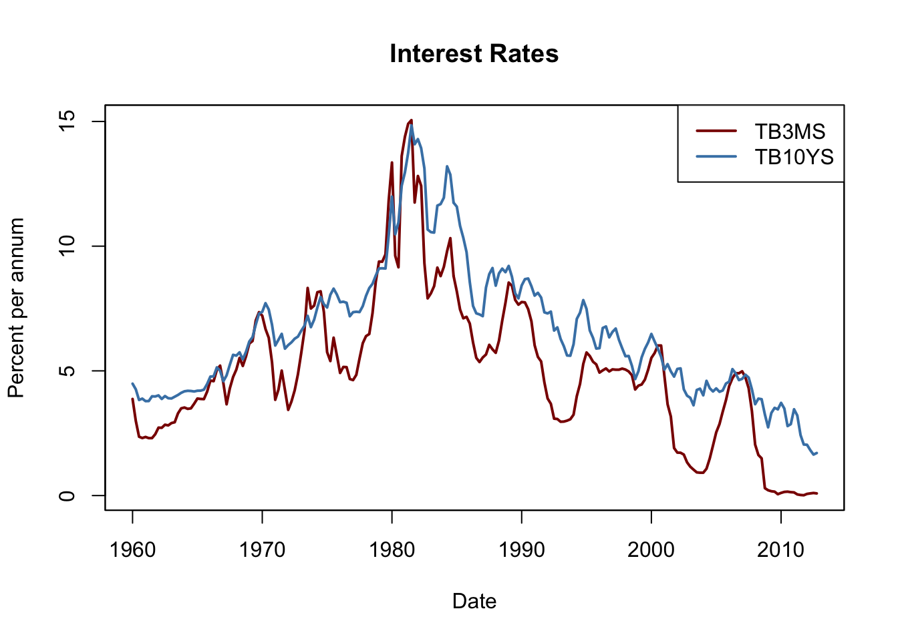

14.5 Additional Predictors and The ADL Model
Instead of only using the dependent variable’s lags as predictors, an autoregressive distributed lag (ADL) model uses also other lags of other variables for forecasting. The general ADL model is summarized in Key Concept 14.4
Key Concept 14.4
The Autoregressive Distributed Lag Model
An ADL(\(p\),\(q\)) model assumes that a time series \(Y_t\) can be represented by a linear function of \(p\) of its lagged values and \(q\) lags of \(X_t\), another time series. We say that
\[\begin{align*} Y_t =& \, \beta_0 + \beta_1 Y_{t-1} + \beta_2 Y_{t-2} + \dots + \beta_p Y_{t-p} \\ +& \, \delta_1 X_{t-1} + \delta_2 X_{t-2} + \dots + \delta_q X_{t-q} X_{t-q} + u_t. \end{align*}\]is an autoregressive distributed lag model with \(p\) lags of \(Y_t\) and \(q\) lags of \(X_t\) where \(E(u_t\vert Y_{t-1}, Y_{t-2}, \dots, X_{t-1}, X_{t-2}, \dots)=0\).
Forecasting GDP Growth Using the Term Spread
Interest on long-term and short term treasury bonds are closly linked to the macroeconomic development. While interest rates on both types of bonds have the same long-run tendencies, they behave quite differently in the short run. The difference in interest rates of two bonds with distinct matuarity is called the term spread.
The following code chuncks reproduce figure 14.3 of the book which displays interest rates of 10-year U.S. Treasury bonds and 3 month U.S. Treasury bills from 1960 to 2012.
# 3 months Treasury bills interest rate
TB3MS <- xts(USMacroSWQ$TB3MS, as.yearqtr(USMacroSWQ$X., format = "%Y:0%q"))["1960::2012"]
# 10 years Treasury bonds interest rate
TB10YS <- xts(USMacroSWQ$GS10, as.yearqtr(USMacroSWQ$X., format = "%Y:0%q"))["1960::2012"]
# term spread
TSpread <- TB10YS - TB3MS# reproduce figure 14.2 (a) of the book
chart.TimeSeries(merge(TB3MS,TB10YS),
date.format = "%Y",
minor.ticks = F,
col = c("black", "steelblue"),
lty = c(2,1),
period.areas = c(
"1960::1961","1970","1974::1975",
"1980","1981::1982","1990::1991","2001","2007::2009"
),
ylab = "Percent per annum",
main = "Interest Rates",
legend.loc = "topright"
)
# reproduce figure 14.2 (b) of the book
chart.TimeSeries(TSpread,
date.format = "%Y",
minor.ticks = F,
col = "steelblue",
period.areas = c(
"1960::1961","1970","1974::1975",
"1980","1981::1982","1990::1991","2001","2007::2009"
),
ylab = "Percent per annum",
main = "Term Spread"
)
Notice that before recessions, the gap between interests on long-term bonds and short term bills narrows and consequently the term spread declines drastically towards zero or even falls below zero in times of economic stress. This information might be used to improve forecasts of future GDP growth.
We check this by estimating an ADL(\(2\),\(1\)) model and an ADL(\(2\),\(2\)) model of the GDP growth rate using lags of GDP growth and lags of the term spread as regressors and use both models for forecasting the GDP growth in 2013:Q1.
# convert series to ts objects
GDPGrowth_ts <- ts(GDPGrowth,
start = c(1960, 1),
end = c(2013, 4),
frequency = 4)
TSpread_ts <- ts(TSpread,
start = c(1960, 1),
end = c(2012, 4),
frequency = 4)
# join both series
ADLdata <- ts.union(GDPGrowth_ts, TSpread_ts)# estimate the ADL(2,1) model of GDP growth
GDPGR_ADL21 <- dynlm(GDPGrowth_ts ~ L(GDPGrowth_ts) + L(GDPGrowth_ts, 2) + L(TSpread_ts),
start = c(1962, 1), end = c(2012, 4))
coeftest(GDPGR_ADL21, vcov. = sandwich)##
## t test of coefficients:
##
## Estimate Std. Error t value Pr(>|t|)
## (Intercept) 0.954990 0.486976 1.9611 0.051260 .
## L(GDPGrowth_ts) 0.267729 0.082562 3.2428 0.001387 **
## L(GDPGrowth_ts, 2) 0.192370 0.077683 2.4763 0.014104 *
## L(TSpread_ts) 0.444047 0.182637 2.4313 0.015925 *
## ---
## Signif. codes: 0 '***' 0.001 '**' 0.01 '*' 0.05 '.' 0.1 ' ' 1Notice that all coefficients are significant at the level of \(5\%\).
# 2012:Q3 / 2012:Q4 data on GDP growth and term spread
t <- window(ADLdata, c(2012, 3), c(2012, 4))
# ADL(2,1) GDP growth forecast for 2013:Q1
ADL21_forecast <- coef(GDPGR_ADL21) %*% c(1, t[2,1], t[1,1], t[2,2])
ADL21_forecast## [,1]
## [1,] 2.241689# Forecast error
window(GDPGrowth_ts, c(2013,1), c(2013,1)) - ADL21_forecast## Qtr1
## 2013 -1.102487Model (14.4) predicts the GDP growth in 2013:Q1 to be \(2.24\%\) which leads to a forecast error of \(-1.10\%\).
We estimate the ADL(\(2\),\(2\)) specification to see whether adding additional information on past term spread improves the forecast.
# estimate the ADL(2,2) model of GDP growth
GDPGR_ADL22 <- dynlm(GDPGrowth_ts ~ L(GDPGrowth_ts) + L(GDPGrowth_ts, 2) + L(TSpread_ts) + L(TSpread_ts, 2), start = c(1962, 1), end = c(2012, 4))
coeftest(GDPGR_ADL22, vcov. = sandwich)##
## t test of coefficients:
##
## Estimate Std. Error t value Pr(>|t|)
## (Intercept) 0.967967 0.472470 2.0487 0.041800 *
## L(GDPGrowth_ts) 0.243175 0.077836 3.1242 0.002049 **
## L(GDPGrowth_ts, 2) 0.177070 0.077027 2.2988 0.022555 *
## L(TSpread_ts) -0.139554 0.422162 -0.3306 0.741317
## L(TSpread_ts, 2) 0.656347 0.429802 1.5271 0.128326
## ---
## Signif. codes: 0 '***' 0.001 '**' 0.01 '*' 0.05 '.' 0.1 ' ' 1The coefficients on both lags of the term spread are not significant at the \(10\%\) level.
# ADL(2,2) GDP growth forecast for 2013:Q1
ADL22_forecast <- coef(GDPGR_ADL22) %*% c(1, t[2,1], t[1,1], t[2,2], t[1,2])
ADL22_forecast## [,1]
## [1,] 2.274407# Forecast error
window(GDPGrowth_ts, c(2013,1), c(2013,1)) - ADL22_forecast## Qtr1
## 2013 -1.135206The ADL(\(2\),\(2\)) forecast of GDP growth in 2013:Q1 is \(2.27\%\) which imples a forecast error of \(1.14\%\).
Do the ADL models (14.4) and (14.5) improve upon the simple AR(\(2\)) model (14.3) in terms of forecasting GPD growth in 2013:Q1? The answer is yes: while \(SER\) and \(\overline{R}^2\) improve only slightly, an \(F\)-test on the term spread coefficients in (14.5) provides evidence that the model does better in explaining GPD growth than the AR(\(2\)) model as the hypothesis that both coefficients are zero cannot be rejected at the significance level of \(5\%\).
# compare adj. R2
c(
"Adj.R2 AR(2)" = summary(GDPGR_AR2)$r.squared,
"Adj.R2 ADL(2,1)" = summary(GDPGR_ADL21)$r.squared,
"Adj.R2 ADL(2,2)" = summary(GDPGR_ADL22)$r.squared
)## Adj.R2 AR(2) Adj.R2 ADL(2,1) Adj.R2 ADL(2,2)
## 0.1425484 0.1743996 0.1855245# compare SER
c(
"SER AR(2)" = summary(GDPGR_AR2)$sigma,
"SER ADL(2,1)" = summary(GDPGR_ADL21)$sigma,
"SER ADL(2,2)" = summary(GDPGR_ADL22)$sigma
)## SER AR(2) SER ADL(2,1) SER ADL(2,2)
## 3.132122 3.070760 3.057655# F-test on coefficients of term spread
linearHypothesis(GDPGR_ADL22,
c("L(TSpread_ts)=0","L(TSpread_ts, 2)=0"),
vcov. = sandwich
)## Linear hypothesis test
##
## Hypothesis:
## L(TSpread_ts) = 0
## L(TSpread_ts, 2) = 0
##
## Model 1: restricted model
## Model 2: GDPGrowth_ts ~ L(GDPGrowth_ts) + L(GDPGrowth_ts, 2) + L(TSpread_ts) +
## L(TSpread_ts, 2)
##
## Note: Coefficient covariance matrix supplied.
##
## Res.Df Df F Pr(>F)
## 1 201
## 2 199 2 4.4344 0.01306 *
## ---
## Signif. codes: 0 '***' 0.001 '**' 0.01 '*' 0.05 '.' 0.1 ' ' 1Stationarity
In general, forecasts an be improved by using mutliple predictors — just as in cross-sectional regression. For time series regressions to yield reliable models, the assumption of stationarity must be fulfilled. Key Concept 14.5 explains what stationarity is.
Key Concept 14.5
Stationarity
We say that a time series \(Y_t\) is stationary if its probability distribution is time independent, that is the joint distribution \(Y_{s+1}, Y_{s+2},\dots,Y_{s+T}\) does not change as \(s\) varies, regardless of \(T\).
Similarly, we say that two time series \(X_t\) and \(Y_t\) are jointly stationary if the joint distribution of \((X_{s+1},Y_{s+1}, X_{s+2},Y_{s+2} \dots, X_{s+T}Y_{s+T})\) does not depend on \(s\), regardless of \(T\).
In a probabilistic sense, stationarity means that information about how a time series evolves in the future is inherent to its past. If this is not the case, we cannot use the past of a series as a reliable guideline for its future.
Time Series Regression with Multiple Predictors
The concept of stationarity is a key assumption in the general time series regression model with multiple predictors. Key Concept 14.6 elaborates the model and its assumptions.
Key Concept 14.6
Time Series Regression with Multiple Predictors
The general time series regression model extends the ADL such that multiple regressors and their lags are included. It uses \(p\) lags of the dependent variable and \(q_l\) lags of \(l\) additional predictors where \(l=1,\dots,k\):
\[\begin{equation} \begin{aligned} Y_t =& \, \beta_0 + \beta_1 Y_{t-1} + \beta_2 Y_{t-2} + \dots + \beta_{p} Y_{t-p} \\ +& \, \delta_{11} X_{1,t-1} + \delta_{12} X_{1,t-2} + \dots + \delta_{1q} X_{1,t-q} \\ +& \, \dots \\ +& \, \delta_{k1} X_{k,t-1} + \delta_{k2} X_{k,t-2} + \dots + \delta_{kq} X_{k,t-q} \\ +& \, u_t \end{aligned} \end{equation}\]For estimation we make the following assumptions:
The error term \(u_t\) has conditional mean zero given all regressors and their lags: \[E(u_t\vert Y_{t-1}, Y_{t-2}, \dots, X_{1,t-1}, X_{1,t-2} \dots, X_{k,t-1}, X_{k,t-2}, \dots)\] This assumption is an extension of the conditional mean zero assumption used for AR and ADL models and guarantees that the gernal time series regression model stated above gives the best forecast of \(Y_t\) given its lags, the additional regressors \(X_{1,t},\dots,X_{k,t}\) and their lags.
The \(i.i.d\) assumption for cross-sectional data is not (entirely) meaningful for time series data. We replace it by the following one with two parts:
The \((Y_{t}, X_{1,t}, \dots, X_{k,t})\) have a stationary distribution (the “identically distributed” part of the i.i.d. assumption for cross-setional data). If this does not hold, forecasts may be biased and infernce can be strongly misleading.
\((Y_{t}, X_{1,t}, \dots, X_{k,t})\) and \((Y_{t-j}, X_{1,t-j}, \dots, X_{k,t-j})\) become independent as \(j\) gets large (the “idependly” distributed part of the i.i.d. assumption for cross-sectional data). This assumption is also called weak dependence. It ensures that, in large samples, the WLLN and the central limit theorem hold.
Large outliers are unlikely: \(E(X_{1,t}^4), E(X_{2,t}^4), \dots, E(X_{k,t}^4)\) and \(E(Y_t^4)\) have nonzero, finite fourth moments.
No perfect multicollinearity.
Since many economic time series appear to be nonstationary, assumption 2 of Key Concept 14.6 is a crucial one in applied macroeconomics and finance which is why statistical test for stationarity / nonstationarity have been developed. Chapters 14.6 and 14.7 are devoted to this topic.
Statistical inference and the Granger causality test
If a \(X\) is a useful predictor for \(Y\), in a regression of \(Y_t\) on lags of its own and lags of \(X_t\), not all of the coefficients on the lags on \(X_t\) are zero. This concept is called “Granger causality” and is an interesting hypothesis to test. Key Concept 14.7 summarizes the idea.
Key Concept 14.7
Granger Causality Tests
The Granger causality test (Granger, 1969) is an \(F\)-test of the null hypothesis that all lags of a variable \(X\) included in a time series regression model do not have predictive power for \(Y_t\). The Granger causality test does not test whether \(X\) actually causes \(Y\) but whether the included lags have are informative in terms of predicting \(Y\).
Notice that we have already performed a Granger causality test on the coefficients of term spread in (??), the ADL(\(2\),\(2\)) model of GDP growth and concluded that at least on of the first two lags of term spread has predictive power for GDP growth.
Forecast Uncertainty and Forecast Intervals
In general, it is a good practice to report a measure of the uncertainty inherent the estimation. Uncertainty is particulary of interest when forecasting a time series. For example, consider a simple ADL\((1,1)\) model \[\begin{align*} Y_t = \beta_0 + \beta_1 Y_{t-1} + \delta_1 X_{t-1} + u_t \end{align*}\] where \(u_t\) is a homoskedastic error term. Then, the forecast error is \[\begin{align*} Y_{T+1} - \widehat{Y}_{T+1\vert T} = u_{T+1} - \left[(\widehat{\beta}_0 - \beta_0) + (\widehat{\beta}_1 - \beta_1) Y_T + (\widehat{\delta_1} - \delta_1) X_t \right] \end{align*}\] The mean squared forecast error (MSFE) and the RMFSE are \[\begin{align*} MFSE =& \, E\left[(Y_{T+1} - \widehat{Y}_{T+1\vert T})^2 \right] \\ =& \, \sigma_u^2 + var\left[ (\widehat{\beta}_0 - \beta_0) + (\widehat{\beta}_1 - \beta_1) Y_T + (\widehat{\delta_1} - \delta_1) X_t \right], \\ RMFSE =& \, \sqrt{\sigma_u^2 + var\left[ (\widehat{\beta}_0 - \beta_0) + (\widehat{\beta}_1 - \beta_1) Y_T + (\widehat{\delta_1} - \delta_1) X_t \right]}. \end{align*}\] A \(95\%\) forecast interval is an interval that covers the true value of \(Y_{T+1}\) in \(95\%\) of repeated applications. Note that there is a major difference in computing a confidence interval and a forecast interval: when computing a confidence interval of a point estimate we use large sample approximations that are justified by the central limit theorem and thus are valid for a large range of error term distributions. For computation of a forecast interval of \(Y_{T+1}\), however, we must make an additional assumption about the distribution of \(u_{T+1}\), the error term in period \(T+1\). Assuming that \(u_{T+1}\) is normally distributed on can construct a \(95\%\) forecast interval for \(Y_{T+1}\) using \(SE(Y_{T+1} - \widehat{Y}_{T+1\vert T})\), an estimate of the RMSFE: \[\begin{align*} \widehat{Y}_{T+1\vert T} \pm 1.96 \cdot SE(Y_{T+1} - \widehat{Y}_{T+1\vert T}) \end{align*}\]Of course the computation gets more complicated when the error term is heteroskedastic or if we are interested in computing a forecast interval for \(T+s, s>1\).
In some applications it is useful to report multiple forecast intervals for each step in range of subsequents periods, see the Box The River of Blood on p. 592 of the book. Such forecast ranges can be visualized in a so-called fan chart. We will not replicate the fan chart presented in Figure 14.2 of book because the underlying model is by far more compley than the simple AR and ADL models treated here. Instead, in the example below we use simulated time series data and estimate an ADL(\(1\),\(1\)) model which is than used for forecasting the subsequent 25 future outcomes of the series. We choose level = seq(5,99,10) in the call of forecast() such that forecast intervals with levels \(5\%,15\%,\dots,95%\) are computed for each point forecast of the series.
# simulate time series
set.seed(1234)
Z <- arima.sim(list(order = c(1, 0, 0), ar = 0.5), n = 200)
X <- arima.sim(list(order = c(1, 0, 0), ar = 0.2), n = 200)
Y <- 0.7 * Z + 0.7 * X + rnorm(100)
# estimate an ADL(1,1) model using arima, see ?arima
model <- arima(Y, order = c(2, 0, 0))
# compute points forecasts and prediction intervals for next 25 periods
fc <- forecast(model, h = 25, level = seq(5, 99, 10))
# plot fan chart
plot(fc,
main = "Forecast Fan Chart for ADL(2,2) Model of Simulated Data",
showgap = F,
fcol = "red",
flty = 2)
The dashed red line shows point forecasts of the series for the next 25 periods based on an \(ADL(1,1)\) model and the shaded areas represent the prediction intervals. The degree of shading indicates the level of the prediction interval. The darkest of the blue bands displays the \(5\%\) forecast intervals and the color fades towards grey as the level of the intervals increases.